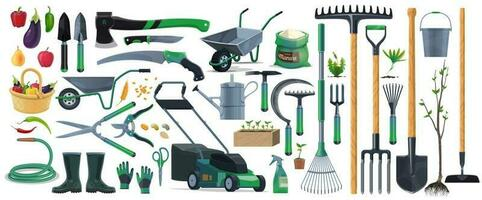

A G R I C U L T U R E
Manual Tools

“Manual Tools is Sickle, spade, and axe are some of the traditional agricultural implements used by farmers.
It is a labour and time-intensive agriculture practice.Today's garden tools originated with the earliest agricultural implements used by humans. Examples include the hatchet, axe, sickle, scythe, pitchfork, spade, shovel, trowel, hoe, fork, and rake. In some places, the machete is common.
The earliest tools were made variously of wood, flint, metal, tin, and bone. The development of metalworking, first in copper and later in bronze, iron, and steel, produced today's durable tools, including such efficient cutting tools as pruning shears (secateurs – for example anvil pruners), grass shears, and loppers.
Increasing use of modern alloys allows many tools to be made both stronger and lighter, making them more durable and easier to use.
Antique tool
The use of tools is one of the primary means by which humans are distinguished from other animals. Tools are the parents of all other antiques. Most man-made objects were made and great effort goes into the creation of newer and better tools to solve the production problems of today. The study of antique tools provides a glimpse of human development and cultural preferences history.
The creation of a tool often makes possible the creation of more advanced tools. Advanced tools made possible the manufacture of internal-combustion engines, automobiles, and computers. Among those who like to collect, some may do so as part of a rigorous study program – they want to catalog all types of a specific tool, for example. Some collectors may wish to preserve some of the past for future generations, others fall under the spell of the beauty of some antique tools.
Groundskeeping
Groundskeeping is the activity of tending an area of land for aesthetic or functional purposes, typically in an institutional setting. It includes mowing grass, trimming hedges, pulling weeds, planting flowers, etc. The U.S. Department of Labor estimated that more than 900,000 workers are employed in the landscape maintenance and groundskeeping services industry in the United States in 2006. Of these over 300,000 workers were greenskeepers for golf courses, schools, resorts, and public parks. Compare gardener.